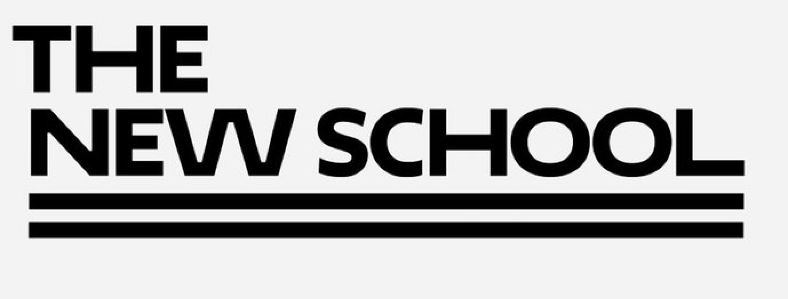

Education
 Stewartson attends The New School: Eugene Lang College of Liberal Arts and is majoring in Journalism + Design. Expected grdautio date: May 2022.
Courses:
The New School Free Press, January-May 2019 2019: Reported on Arts and Culture stories for the paper, including a profile of up-and-coming musical artist, Froglady, and a piece about on-campus fashion called Fashion on 5th. The class helped strengthened her interpersonal skills, interview skills, and proofreading/editing skills. Web Fundamentals, January-May 2019: Learned basic HTML, CSS, JavaScript. Created own web page using html and css. NNDI, August-December 2018: Learned basic reporting skills. Reported on East Village community.
Work Experience
Stewartson was a Camp Counselor from June 2015-August 2017 at St. Stephens Camp, Salvation Army Kroc Center, YMCA of Greater Boston. Worked with children ages 4-9. Coordinated daily activities for the children: helped serve and facilitate meal times, Supervised classroom activities and developed excellent classroom management. Managed individual group of children on field trips and oversaw playground activities. She was an Intern at Tremont Strategies Group from May 2018-Present. Researched and compiled information about clientele using excel spreadsheets. Helped facilitate a fundraising lunch for Representatives John Lewis and Julie Goodridge
Volunteer Experience
Volunteered at Martin Luther King K-8 School from Sept 2016-Present. Worked with teachers in Kindergarten classroom, coordinated activities for family fun day, back to school barbeque. Tutored 7 and 8th graders on English grammar for “Do the Write Thing” Essay contest. Assisted with the preparation for 8th grade moving up ceremony
Skills
Reporting and writing stories on deadline, Sources, investigating, arts and culture, interviewing, interpersonal skills. Social Media, MS Office (Word, Excel, Powerpoint), Google Drive (Docs, Spreadsheets, Presentation), HTML, CSS JavaScript